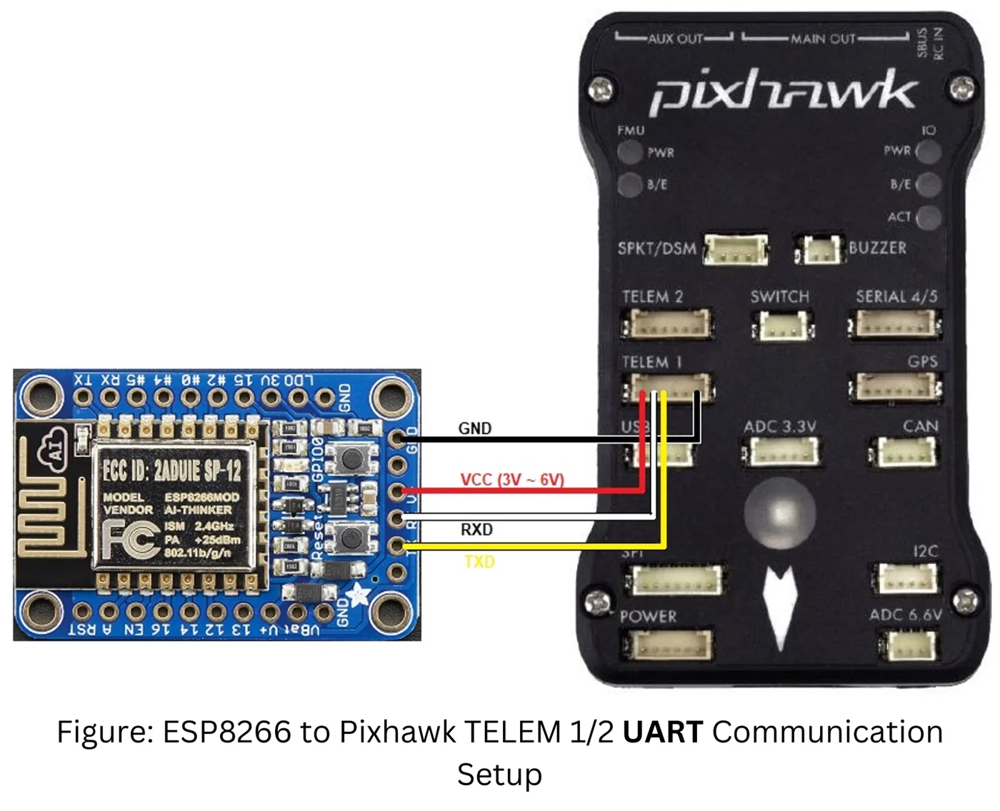
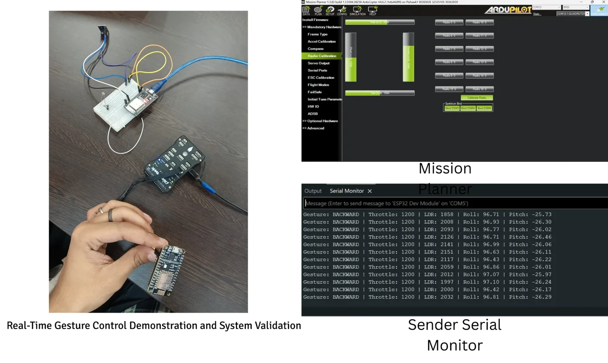

Gesture-controlled drone




A wearable controller that reads hand tilt and sends roll, pitch and throttle commands to a Pixhawk drone over ESP-NOW and MAVLink. First flight completed, with sub-millisecond average link latency.